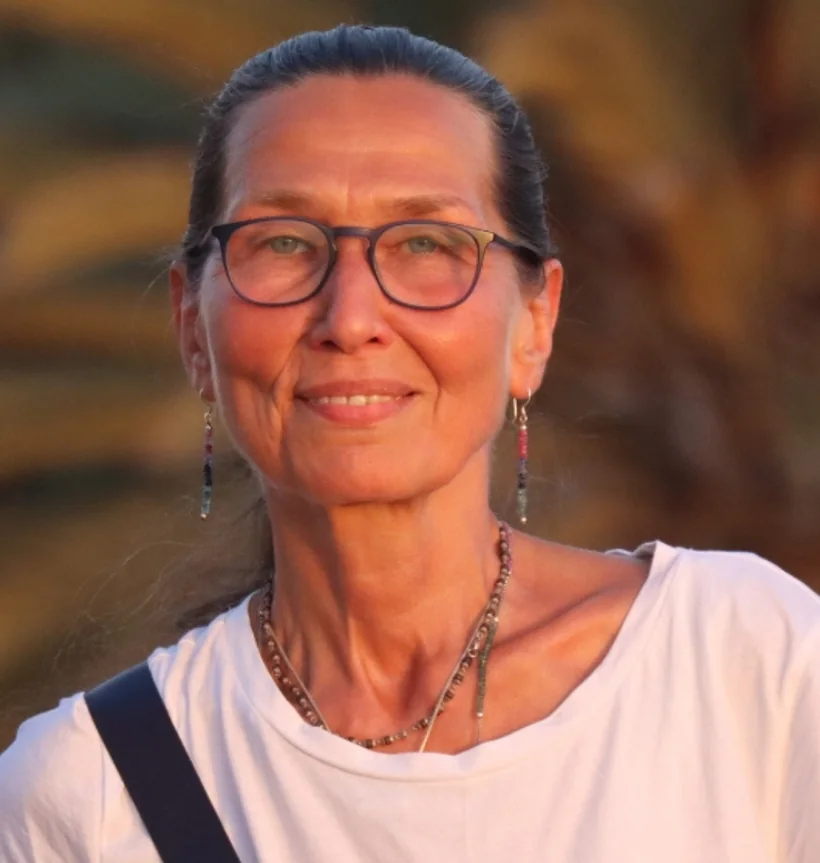

Die Person dahinter
Katharina Rauch
Über dreißig Jahre am Herd, angefangen in einer Zeit, in der fleischlos kochen in Deutschland noch als Sonderfall galt.

Wie es anfing
Ich bin 1966 geboren und in einer Familie aufgewachsen, in der gutes Essen und die Kunst des Kochens immer eine große Rolle gespielt haben. Schon früh war klar, dass Kochen für mich mehr ist als eine Notwendigkeit.
Noch in der DDR bin ich über den Buddhismus zum Vegetarismus gekommen. Der Respekt vor allem Lebendigen hat damals meine Ernährung und meine ganze Lebensweise verändert. Diese frühen Jahre prägen bis heute, wie ich koche.
Die Lehrjahre in Heidelberg
1993 habe ich meine Ausbildung in der vedischen Kochkunst im Restaurant Higher Taste in Heidelberg begonnen. Dort habe ich die Feinheiten dieser Küche gelernt, das Arbeiten mit Gewürzen, das Timing, die Ruhe. Vor allem aber habe ich verstanden, dass die Aufmerksamkeit beim Kochen im Ergebnis schmeckbar ist. Diese Zeit war der Grundstein für alles, was danach kam.
Der eigene Weg nach Potsdam
Aus dieser Ausbildung ist Govindas Higher Taste Catering Services in Potsdam entstanden, ein kleines Unternehmen, das sich über regionale und naturbelassene Zutaten definiert. Der Name stammt aus der Bhagavad Gita und beschreibt genau das, worum es mir geht, den höheren Geschmack, der bleibt, wenn man aufhört, dem schnellen hinterherzulaufen.
Unterwegs, um wieder anzukommen
Ich bin oft in Marokko und in Südostasien unterwegs. Dort koche ich mit Freunden, lerne Rezepte und Techniken und bringe jedes Mal etwas mit zurück in meine Küche. Diese Reisen erweitern nicht nur das Repertoire, sie verändern auch den Blick darauf, wie unterschiedlich Menschen essen und was ihnen dabei wichtig ist.
Kochen als Beruf, den ich mir selbst gebaut habe
Als alleinstehende Frau habe ich mir meinen Platz in einer Branche erarbeitet, in der überwiegend Männer die Küchen führen. Das hat Beharrlichkeit gebraucht. Geblieben ist die Überzeugung, dass Kochen ein Dialog ist, eine Möglichkeit, Menschen über Geschmack zu verbinden und Momente zu schaffen, an die sie sich später erinnern.
Kochen als Bestimmung, als Kunst, als Dialog.